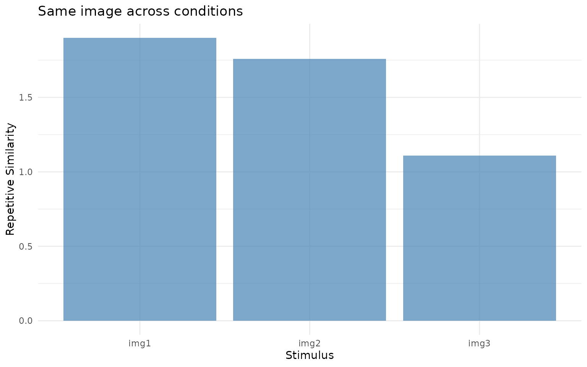
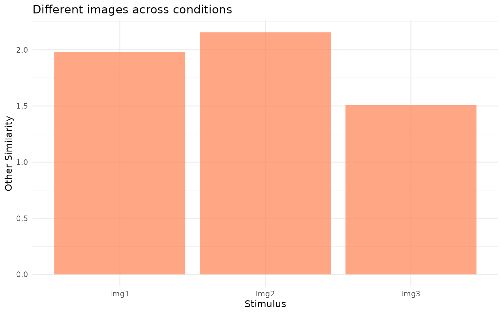

Measuring Similarity Across Repeated Viewings
RepetitiveSimilarity.RmdWhen participants view the same image multiple times — say, during encoding and retrieval — do they look at the same locations each time? And is that consistency specific to the repeated stimulus, or just a general gaze pattern?
repetitive_similarity() answers these questions by
computing within-stimulus similarity across experimental conditions and
comparing it to cross-stimulus similarity. Unlike
template_similarity() which requires explicit
encoding-retrieval pairing, repetitive_similarity()
examines all possible within-stimulus combinations and
summarizes them.
Setting up the data
Let’s simulate a small dataset: 2 participants view 3 images during encoding and retrieval.
set.seed(42)
gen_fixations <- function(imname, phase, participant) {
nfix <- sample(3:10, 1)
data.frame(
x = runif(nfix, 0, 100), y = runif(nfix, 0, 100),
onset = cumsum(runif(nfix, 20, 80)),
duration = runif(nfix, 80, 300),
image = imname, phase = phase, participant = participant
)
}
df <- do.call(rbind, lapply(c("s1", "s2"), function(s) {
do.call(rbind, lapply(c("encoding", "retrieval"), function(p) {
do.call(rbind, lapply(paste0("img", 1:3), function(img) {
gen_fixations(img, p, s)
}))
}))
}))
eyetab <- eye_table("x", "y", "duration", "onset",
groupvar = c("participant", "phase", "image"),
data = df)Compute density maps for each participant-phase-image combination:
eyedens <- density_by(eyetab,
groups = c("phase", "image", "participant"),
sigma = 50,
xbounds = c(0, 100), ybounds = c(0, 100))Computing repetitive similarity
repetitive_similarity() takes the density table and a
condition variable (here phase) that defines the repeated
viewings:
rep_sim <- repetitive_similarity(eyedens,
condition_var = "phase",
method = "pearson")
rep_sim
#> # A tibble: 12 × 7
#> phase image participant fixgroup density repsim othersim
#> <chr> <chr> <chr> <list> <list> <dbl> <dbl>
#> 1 encoding img1 s1 <fxtn_grp [3 × 6]> <ey_dnsty> 0.304 0.367
#> 2 encoding img1 s2 <fxtn_grp [9 × 6]> <ey_dnsty> 0.377 0.626
#> 3 encoding img2 s1 <fxtn_grp [6 × 6]> <ey_dnsty> 0.423 0.506
#> 4 encoding img2 s2 <fxtn_grp [6 × 6]> <ey_dnsty> 0.461 0.694
#> 5 encoding img3 s1 <fxtn_grp [10 × 6]> <ey_dnsty> 0.204 0.243
#> 6 encoding img3 s2 <fxtn_grp [3 × 6]> <ey_dnsty> 0.0566 0.388
#> 7 retrieval img1 s1 <fxtn_grp [9 × 6]> <ey_dnsty> 0.688 0.582
#> 8 retrieval img1 s2 <fxtn_grp [5 × 6]> <ey_dnsty> 0.531 0.408
#> 9 retrieval img2 s1 <fxtn_grp [5 × 6]> <ey_dnsty> 0.534 0.565
#> 10 retrieval img2 s2 <fxtn_grp [3 × 6]> <ey_dnsty> 0.341 0.389
#> 11 retrieval img3 s1 <fxtn_grp [7 × 6]> <ey_dnsty> 0.538 0.587
#> 12 retrieval img3 s2 <fxtn_grp [5 × 6]> <ey_dnsty> 0.312 0.293The result contains two key columns:
- repsim — within-stimulus similarity: how consistently participants looked at the same locations for the same image across conditions
- othersim — cross-stimulus similarity: baseline similarity between different images viewed under different conditions
Interpreting the results
ggplot(rep_sim, aes(x = image, y = repsim)) +
geom_col(fill = "steelblue", alpha = 0.7) +
labs(x = "Stimulus", y = "Repetitive Similarity",
title = "Same image across conditions") +
theme_minimal()
Within-stimulus similarity (repsim). Higher values indicate that participants fixated similar locations when viewing the same image across encoding and retrieval.
ggplot(rep_sim, aes(x = image, y = othersim)) +
geom_col(fill = "coral", alpha = 0.7) +
labs(x = "Stimulus", y = "Other Similarity",
title = "Different images across conditions") +
theme_minimal()
Cross-stimulus similarity (othersim). This represents the baseline: how similar gaze patterns are when comparing different images across conditions.
With random data, both values should be near zero. In a real
experiment, you would expect repsim to be higher than
othersim if participants show stimulus-specific
eye-movement reinstatement. The difference
(repsim - othersim) gives you a corrected measure of
reinstatement that controls for general gaze tendencies.
What’s next?
- See
?repetitive_similarityfor additional options, includingpairwise = TRUEto return all pairwise similarities instead of summaries -
vignette("eyesim")covers the fulltemplate_similarity()workflow with permutation-based baselines -
vignette("latent-transforms")describes domain-adaptation methods that can improve similarity estimates across devices or participants